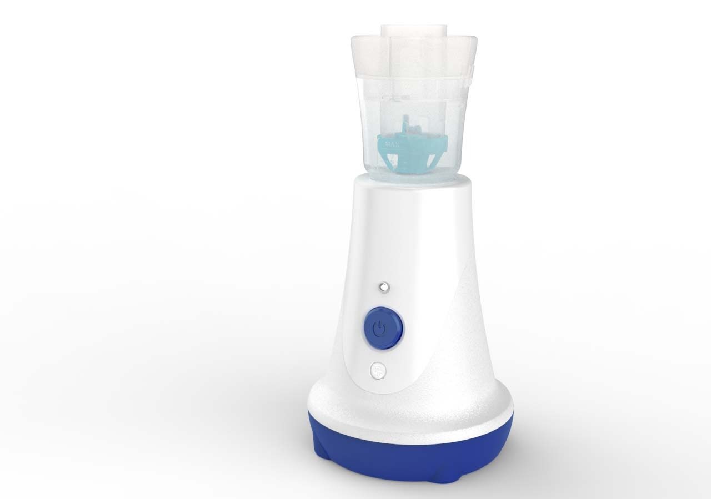
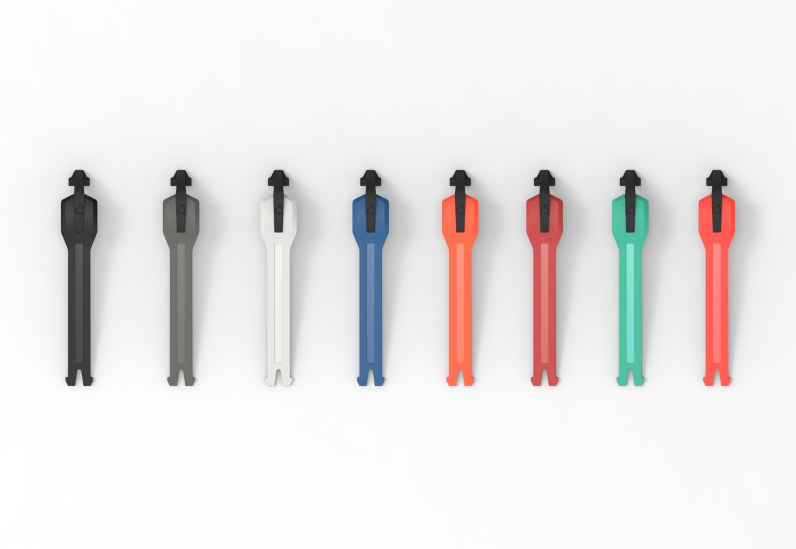
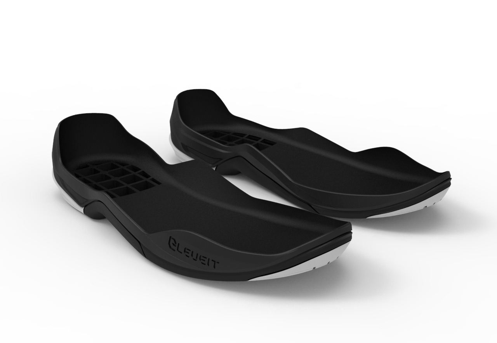
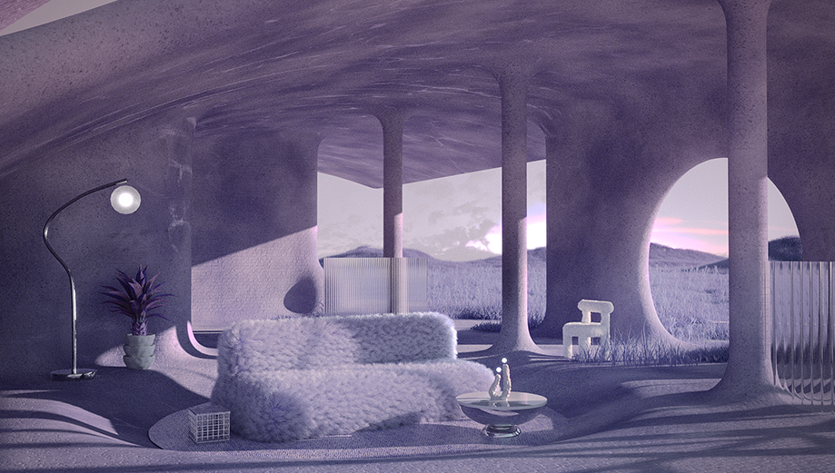

OPEN IMAGE ↗
OPEN IMAGE ↗01 / INTERIOR
Interior Render
2017SketchUp · V-Ray
- 製作範圍從平面圖、3D 建模、渲染到最後提案。
- 視覺目的練習真實空間比例、室內光線與構圖，呈現接近實境的空間模擬圖。
VISUAL LAB / 2017—2023
這組作品補充技術管線之外的視覺基礎，涵蓋室內空間、醫療產品、CMF 與概念場景。每件作品只標示實際使用工具與製作範圍。
OPEN IMAGE ↗01 / INTERIOR
SketchUp · V-Ray
 OPEN IMAGE ↗
OPEN IMAGE ↗02 / MEDICAL PRODUCT
Creo · KeyShot

OPEN IMAGE ↗03 / MEDICAL PRODUCT
Creo · Blender · KeyShot

OPEN IMAGE ↗04 / CMF
NX · ICEM · KeyShot

OPEN IMAGE ↗05 / CMF
NX · Rhino · KeyShot

OPEN IMAGE ↗06 / PERSONAL STUDY
Cinema 4D · Blender